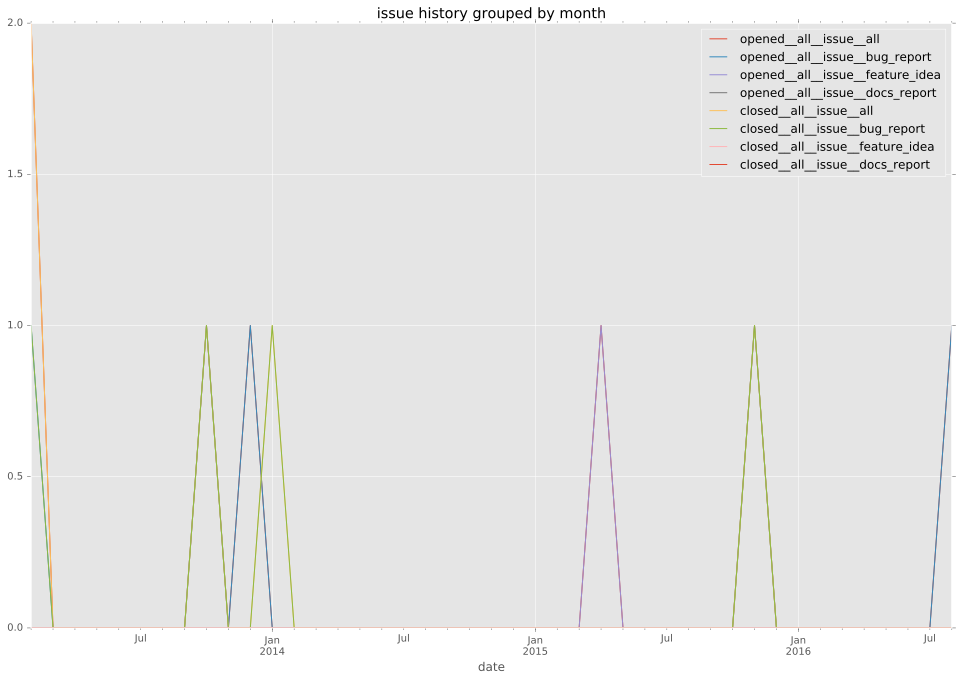
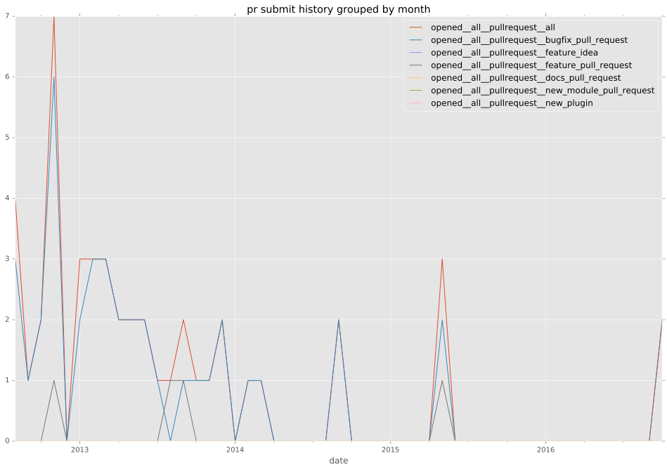
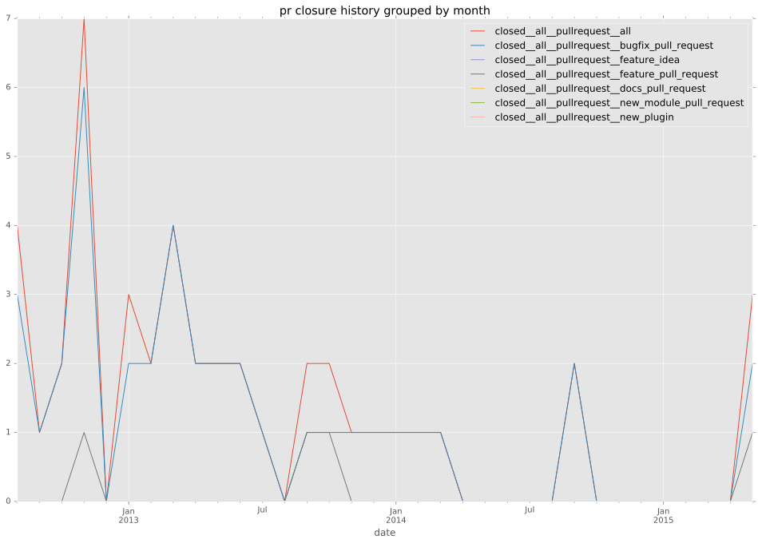
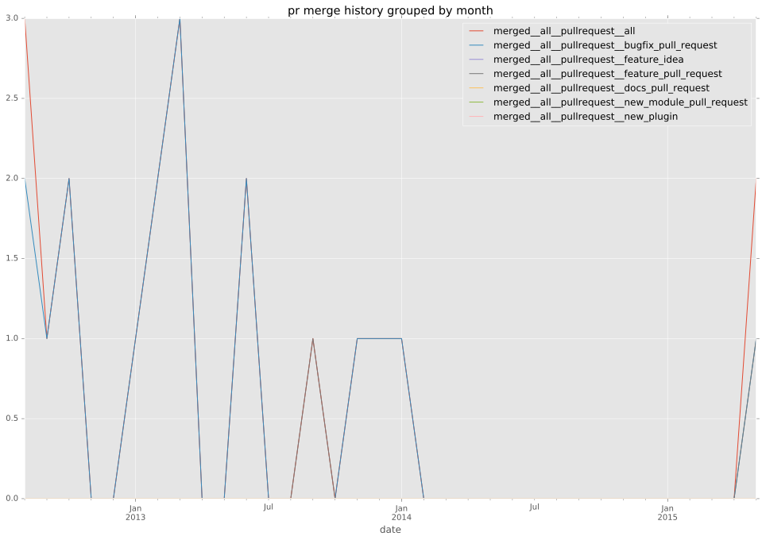

authors
- mattupstate
maintainers
- mattupstate
contributors
- mattupstate : 16 commits
- schlueter : 13 commits
- jhoekx : 11 commits
- jpmens : 8 commits
- sfromm : 5 commits
- jctanner : 5 commits
- jeremypenner : 3 commits
- mavimo : 2 commits
- dhozac : 2 commits
- veeti : 1 commits
- dagwieers : 1 commits
total issue counts
unknown: 2
feature pull request: 6
pullrequest: 46
bugfix pull request: 38
feature idea: 1
issue: 7
bug report: 6
issue history

pullrequest history



days open by issue type
bugfix pull request
count: 55
std: 5.14156495979
min: 0
max: 24
median: 0.0
mean: 2.56363636364
all
count: 69
std: 8.64259066493
min: 0
max: 59
median: 0.0
mean: 3.52173913043
pullrequest
count: 0
std: nan
min: nan
max: nan
median: nan
mean: nan
feature pull request
count: 6
std: 23.207039162
min: 0
max: 59
median: 3.0
mean: 11.8333333333
feature idea
count: 0
std: nan
min: nan
max: nan
median: nan
mean: nan
issue
count: 0
std: nan
min: nan
max: nan
median: nan
mean: nan
bug report
count: 5
std: 10.3923048454
min: 0
max: 24
median: 0.0
mean: 6.0
closures grouped by total days open